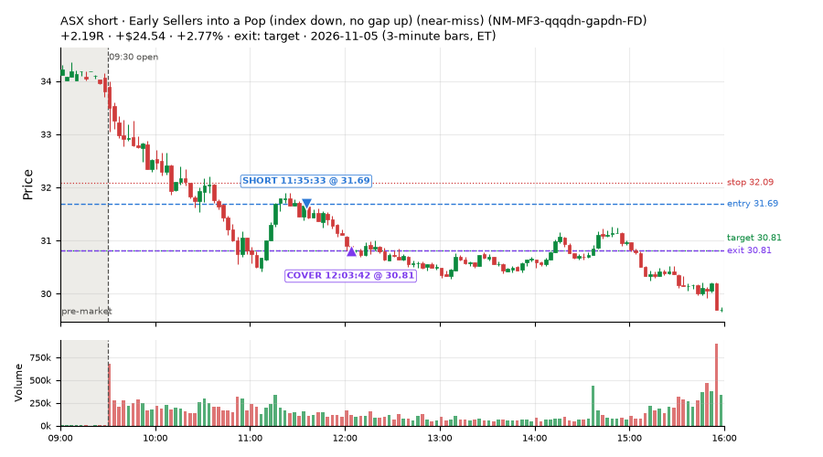
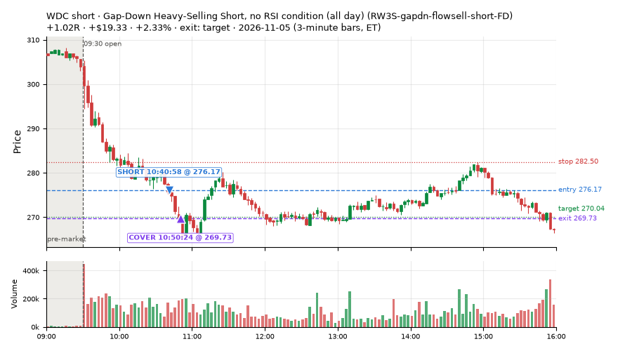
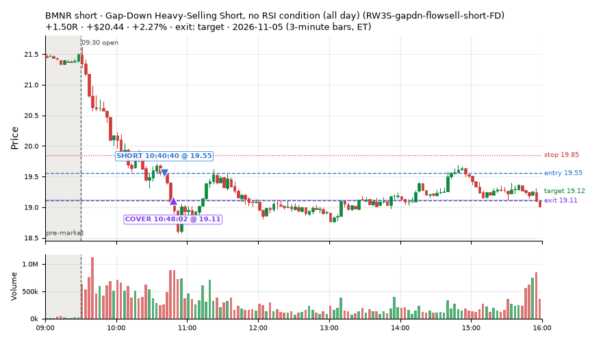
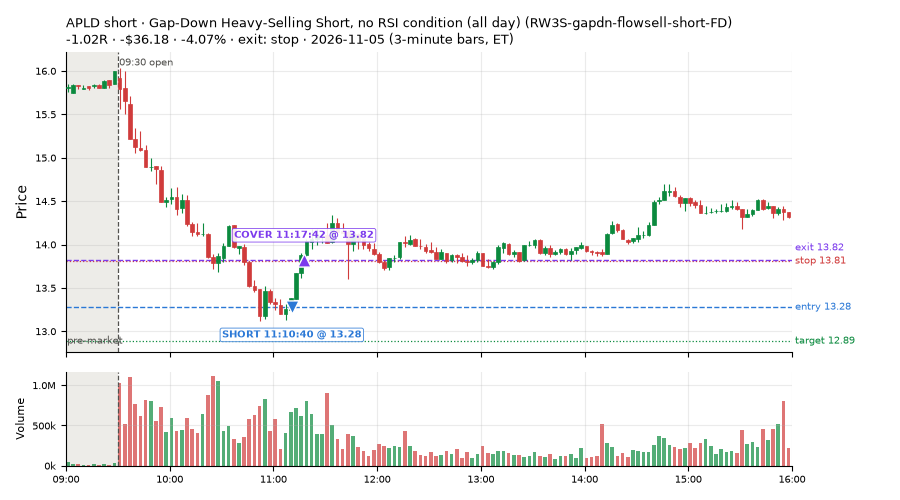
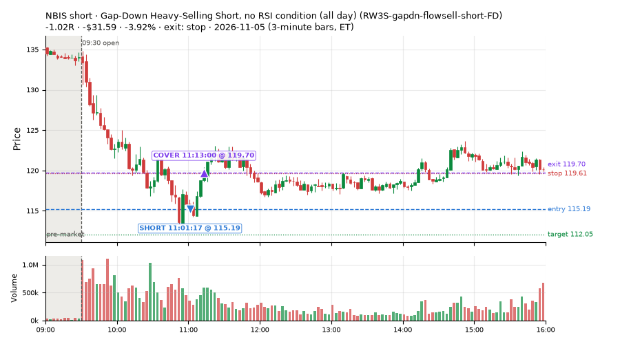
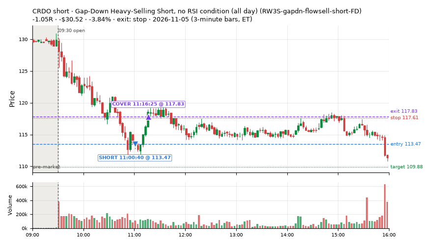
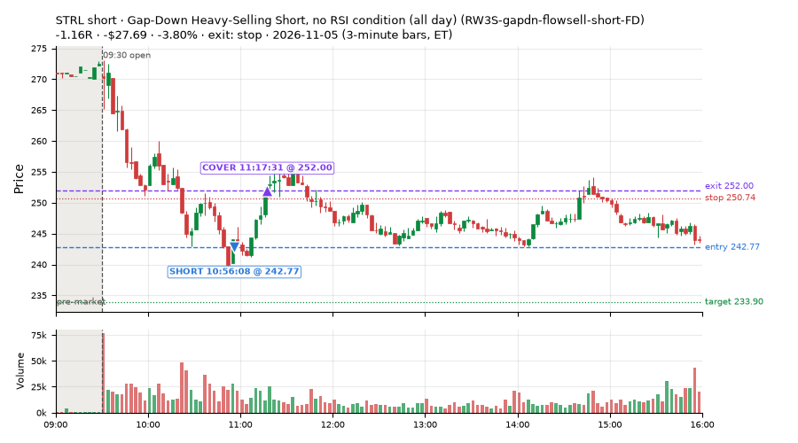
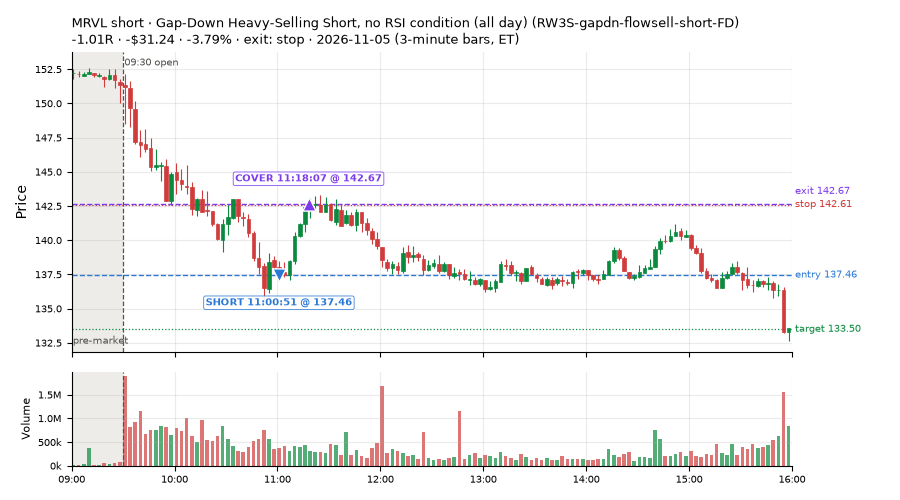

271 trades · win rate 44% · P/L $-975.69
PROBATION: no live setup has passed both locked test periods. 10 owner-directed setups added 2026-10-08 (MarcoFlow top 5 + 5 new), untested live. RW6G1 (RW6 + VWAP band guard) added 2026-10-09, probation.

| Symbol | Setup | Side | In | Out | Entry | Exit | Exit reason | % gained | P/L |
|---|---|---|---|---|---|---|---|---|---|
| ASX | Early Sellers into a Pop (index down, no gap up) (near-miss) (NM-MF3-qqqdn-gapdn-FD) | short | 11:35 | 12:03 | 31.69 | 30.81 | target | +2.77% | $24.54 |
| WDC | Gap-Down Heavy-Selling Short, no RSI condition (all day) (RW3S-gapdn-flowsell-short-FD) | short | 10:40 | 10:50 | 276.17 | 269.73 | target | +2.33% | $19.33 |
| BMNR | Gap-Down Heavy-Selling Short, no RSI condition (all day) (RW3S-gapdn-flowsell-short-FD) | short | 10:40 | 10:48 | 19.55 | 19.11 | target | +2.27% | $20.44 |
| Symbol | Setup | Side | In | Out | Entry | Exit | Exit reason | % lost | P/L |
|---|---|---|---|---|---|---|---|---|---|
| APLD | RW3S-gapdn-flowsell-short-FD | short | 11:10 | 11:17 | 13.28 | 13.82 | stop | -4.07% | $-36.18 |
| NBIS | RW3S-gapdn-flowsell-short-FD | short | 11:01 | 11:13 | 115.19 | 119.70 | stop | -3.92% | $-31.59 |
| CRDO | RW3S-gapdn-flowsell-short-FD | short | 11:00 | 11:16 | 113.47 | 117.83 | stop | -3.84% | $-30.52 |
| STRL | RW3S-gapdn-flowsell-short-FD | short | 10:56 | 11:17 | 242.77 | 252.00 | stop | -3.80% | $-27.69 |
| MRVL | RW3S-gapdn-flowsell-short-FD | short | 11:00 | 11:18 | 137.46 | 142.67 | stop | -3.79% | $-31.24 |








Signal to fill: median 2s, 90th percentile 4s (271 trades). Bars close each minute; the order follows the bar close.
Best excursion (MFE): median 0.29R; worst (MAE) median 0.89R. 44% of trades never got +0.25R in our favour; 3 reached +1R and still closed at or below 0.
| Symbol | Setup | Best R | Worst R | Closed R |
|---|---|---|---|---|
| SPXL | RW3S-gapdn-flowsell-short-FD | +1.25 | -1.16 | -1.16 |
| FDX | CWT13-vwapstretch-z05-long | +1.17 | -1.09 | -1.18 |
| UPRO | RW3S-gapdn-flowsell-short-FD | +1.01 | -1.08 | -1.08 |
| CIBR | RW3S-gapdn-flowsell-short-FD | +0.88 | -1.05 | -1.17 |
| DASH | RW3S-gapdn-flowsell-short-FD | +0.85 | -1.12 | -1.06 |
| Entry time | Trades | Win | Avg R | P/L |
|---|---|---|---|---|
| 09:50-10:30 | 16 | 62% | -0.07 | $-7.52 |
| 10:30-11:30 | 84 | 27% | -0.57 | $-708.33 |
| 11:30-13:00 | 94 | 41% | -0.30 | $-214.62 |
| 13:00-14:00 | 59 | 66% | -0.05 | $-28.78 |
| 14:00-16:00 | 18 | 50% | -0.15 | $-16.45 |
| Setup | Trades | Win | Avg R | Adj R (net of SPY) | Avg R ex-market (all sessions) | P/L |
|---|---|---|---|---|---|---|
| Stretched Below VWAP Bounce (CWT13-vwapstretch-z05-long) | 100.0 | 55% | -0.23 | +0.02 | +0.01 (beta +1.39, n 255) | $-113.93 |
| Failed Prior-Day-Low Break, SPY-Range Regime (long leg) (CWT14-failbrk-pdl-p05-R2A-long) | 37.0 | 46% | -0.24 | -0.07 | -0.00 (beta +0.45, n 76) | $-200.21 |
| Failed Prior-Day-Low Break Long (CWT14-failbrk-pdl-p10-long) | 27.0 | 30% | -0.62 | -0.30 | -0.09 (beta +1.38, n 494) | $-124.44 |
| Failed Prior-Day-Low Break Long (0.1 ATR, low volume) [fill] (CWT14-failbrk-pdl-p10-lowvol-long) | 15.0 | 27% | -0.62 | -0.37 | -0.07 (beta +1.66, n 197) | $-70.34 |
| Sellers into Strength (all day) (MF5-flowsell-vwapup-rsi5hi) owner-directed; holdouts once: Sep-Oct -0.001R n264, Apr-Jun -0.010R n1199 | 1.0 | 100% | +1.08 | +0.56 | +0.18 (beta -2.29, n 13) | $9.55 |
| Gap-Down Capitulation Buy (near-miss) (NM-AR-AM-gapdown-capitulation-long) | 8.0 | 25% | -0.48 | -0.52 | -0.32 (beta +1.73, n 48) | $-33.25 |
| Afternoon Higher-Low Long (near-miss) (NM-HL-T75-pm-long) | 6.0 | 100% | +0.52 | +0.35 | +0.06 (beta +1.68, n 50) | $42.61 |
| Early Sellers into a Pop (index down, no gap up) (near-miss) (NM-MF3-qqqdn-gapdn-FD) | 2.0 | 100% | +1.17 | +0.81 | -0.41 (beta -3.86, n 26) | $27.35 |
| Big Loser VWAP Reclaim Fade, Morning, Wide Stop (NS3V1-am-widestop-short) | 4.0 | 0% | -0.55 | -1.25 | -0.56 (beta -0.37, n 26) | $-32.42 |
| RW1-gapdn-bounce-flowsell-short-FD | 8.0 | 88% | +0.60 | +0.30 | +0.04 (beta -1.50, n 59) | $60.53 |
| Gap-Down Heavy-Selling Short, no RSI condition (all day) (RW3S-gapdn-flowsell-short-FD) | 60.0 | 28% | -0.50 | -0.49 | -0.21 (beta -1.47, n 111) | $-534.55 |
| exhaustion_short-FD | 3.0 | 33% | -0.06 | -0.42 | -0.29 (beta -2.18, n 70) | $-6.59 |
Market direction (SPY, beta 1) accounted for $-318.52 of today's $-975.69; the rest ($-657.17) came from the setups themselves. Avg R net of SPY: -0.18 (incl. a hedge leg's cost; report only).
15 setups live today. Today: 486 signals, 271 taken, 6 lost because another setup held the symbol (1%). Since 2026-10-12 (19 sessions): 9287 signals, 4648 taken, 703 lost to other setups (8%). Peak open positions today 88 of 400 slots. Earnings blackout removed 1502 symbols before scanning.
Simulated playing time (not live): 4624 what-if trades of signals not taken, avg -0.08R, 58% winners; of them 703 lost to another setup (avg -0.20R).
Silent: LD4-st4-breadthup-t1s05-long, LD8-spy-dip030-breadthturn-spxl-holdtr-long, LD1-ns1-breadthup-t05s1-long, CWT04-backside-lh-a25-short, CWT04-backside-vwaptest-a25-short · Crowded out: MF5-flowsell-vwapup-rsi5hi, CWT14-failbrk-pdl-p05-R2A-short, NS3-failed-vwap-reclaim-short-FD · Starved: exhaustion_short-FD, NS5-sma50-flush-oversold-long-FD, RW4-ns3-adv150-short-FD, MF2-open-rsimidhi-flowsell
| Prio | Setup | Today sig / taken | Sessions | Signals / taken / trades | Taken/day | Expected/day | Lost to other setups | Lost to (setup n) | Top skip reasons | SIMULATED: not-taken n / avg R / win | Verdict |
|---|---|---|---|---|---|---|---|---|---|---|---|
| 1 | Big Loser VWAP Reclaim Fade, Morning, Wide Stop NS3V1-am-widestop-short | 5 / 4 | 10 | 57 / 26 / 26 | 2.60 | 5.30 | 3 | NS3V1-am-widestop-short 3, NM-RWR3-ns3-qqqup-early-short 1, NM-RWN3-ns3-spyup-early-short 1 | not shortable / shorts off 19, spread / quote / size 9, symbol held by another setup 3 | 31 / -0.09R / 61% | slow 13.0 entries/week; ~5 weeks to 60 trades |
| 2 | Gap-Down Capitulation Buy (near-miss) NM-AR-AM-gapdown-capitulation-long | 14 / 8 | 14 | 76 / 48 / 48 | 3.43 | – | 0 | – | spread / quote / size 27, other 1 | 28 / -0.17R / 43% | ok 17.1 entries/week |
| 3 | Afternoon Higher-Low Long (near-miss) NM-HL-T75-pm-long | 9 / 6 | 14 | 57 / 50 / 50 | 3.57 | – | 2 | CWT09-gapdn-vwaploss-g10-short 2, CWT09-gapdn-bounce-g10-lowerhalf-short 2 | spread / quote / size 5, symbol held by another setup 2 | 7 / +0.30R / 86% | ok 17.9 entries/week |
| 4 | Early Sellers into a Pop (index down, no gap up) (near-miss) NM-MF3-qqqdn-gapdn-FD | 6 / 2 | 12 | 49 / 26 / 26 | 2.17 | 4.90 | 4 | NM-AR-AM-gapdown-capitulation-long 4 | not shortable / shorts off 10, spread / quote / size 8, symbol held by another setup 4 | 23 / +0.33R / 65% | slow 10.8 entries/week; ~6 weeks to 60 trades |
| 5 | Stretched Above VWAP Fade (far) CWT13-vwapstretch-z075-short | 1 / 0 | 19 | 45 / 24 / 24 | 1.26 | – | 0 | – | not shortable / shorts off 10, daily loss cap 4, spread / quote / size 3 | 21 / -0.47R / 29% | slow 6.3 entries/week; ~10 weeks to 60 trades |
| 6 | RW1-gapdn-bounce-flowsell-short-FD RW1-gapdn-bounce-flowsell-short-FD | 18 / 8 | 12 | 113 / 59 / 59 | 4.92 | 17.10 | 5 | NM-AR-AM-gapdown-capitulation-long 1, NM-HL-T75-pm-long 1, CWT12-coil-k4-long 1 | spread / quote / size 19, not shortable / shorts off 11, daily loss cap 10 | 54 / +0.15R / 57% | ok 24.6 entries/week |
| 7 | Sellers into Strength (all day) MF5-flowsell-vwapup-rsi5hi | 2 / 1 | 12 | 42 / 13 / 13 | 1.08 | 15.47 | 20 | MF5-flowsell-vwapup-rsi5hi-FD 19, NM-AR-AM-gapdown-capitulation-long 1 | symbol held by another setup 20, spread / quote / size 4, other 3 | 29 / -0.10R / 48% | crowded-out 20 of 42 signals (48%) lost to setups already holding the symbol |
| 8 | exhaustion_short-FD exhaustion_short-FD | 6 / 3 | 12 | 114 / 70 / 70 | 5.83 | 64.64 | 3 | CWT12-coil-k4-long 3 | not shortable / shorts off 27, spread / quote / size 12, symbol held by another setup 3 | 44 / -0.11R / 46% | starved 5.83 entries/day vs ~64.64 expected |
| 9 | Failed Prior-Day-Low Break, SPY-Range Regime (long leg) CWT14-failbrk-pdl-p05-R2A-long | 54 / 37 | 4 | 113 / 76 / 76 | 19.00 | – | 2 | RW3S-gapdn-flowsell-short-FD 2 | spread / quote / size 35, symbol held by another setup 2 | 37 / -0.21R / 54% | ok 95.0 entries/week |
| 10 | Failed Prior-Day-Low Break, SPY-Range Regime (short leg) CWT14-failbrk-pdl-p05-R2A-short | 0 / 0 | 4 | 32 / 13 / 13 | 3.25 | – | 12 | CWT14-failbrk-pdl-p10-long 12, CWT14-failbrk-pdl-p10-lowvol-long 7 | symbol held by another setup 12, spread / quote / size 6, not shortable / shorts off 1 | 19 / +0.11R / 84% | crowded-out 12 of 32 signals (38%) lost to setups already holding the symbol |
| 11 | Stretched Below VWAP Bounce CWT13-vwapstretch-z05-long | 152 / 100 | 18 | 512 / 255 / 255 | 14.17 | – | 3 | CWT14-failbrk-pdh-p05-lowvol-short 1, CWT09-gapdn-vwaploss-g10-short 1, CWT09-gapdn-bounce-g10-lowerhalf-short 1 | daily loss cap 152, spread / quote / size 53, other 47 | 256 / -0.10R / 60% | ok 70.8 entries/week |
| 12 | Afternoon VWAP Reclaim Fade NS4-pm-vwap-reclaim-oversold-short | 0 / 0 | 7 | 20 / 9 / 9 | 1.29 | 3.05 | 0 | – | other 7, spread / quote / size 4 | 11 / +0.27R / 55% | slow 6.4 entries/week; ~9 weeks to 60 trades |
| 13 | Failed Prior-Day-Low Break Long (0.1 ATR, low volume) [fill] CWT14-failbrk-pdl-p10-lowvol-long | 34 / 15 | 14 | 318 / 197 / 197 | 14.07 | – | 10 | CWT14-failbrk-pdl-p10-long 3, RW3S-gapdn-flowsell-short-FD 3, CWT14-failbrk-pdl-p05-lowvol-long 2 | spread / quote / size 75, other 22, daily loss cap 12 | 118 / -0.04R / 62% | ok 70.4 entries/week |
| 14 | Failed Prior-Day-Low Break Long CWT14-failbrk-pdl-p10-long | 54 / 27 | 19 | 796 / 494 / 494 | 26.00 | – | 25 | CWT14-failbrk-pdl-p10-lowvol-long 15, CWT14-failbrk-pdl-p05-lowvol-long 4, RW3S-gapdn-flowsell-short-FD 3 | spread / quote / size 186, other 41, daily loss cap 31 | 299 / -0.01R / 65% | ok 130.0 entries/week |
| 15 | Gap-Down Heavy-Selling Short, no RSI condition (all day) RW3S-gapdn-flowsell-short-FD | 131 / 60 | 3 | 237 / 111 / 111 | 37.00 | – | 5 | CWT14-failbrk-pdl-p05-R2A-long 4, CWT14-failbrk-pdl-p10-lowvol-long 1, CWT14-failbrk-pdl-p10-long 1 | spread / quote / size 63, not shortable / shorts off 30, other 28 | 126 / -0.10R / 46% | ok 185.0 entries/week |
Every trade is attached as a CSV you can open and edit in Excel or Google Sheets. Live page: https://misiti15.github.io/MCF/live/